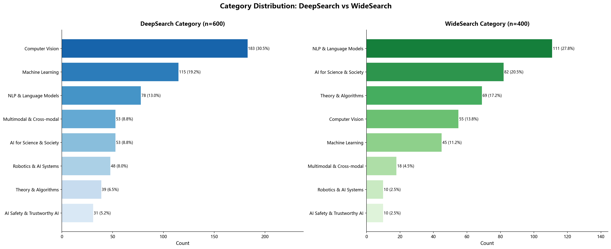
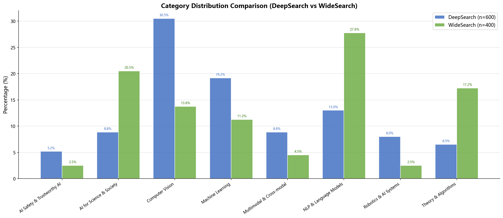

Existing search benchmarks and LLM agents have achieved great success in general web search, yet they fall short when entering the rigorous domain of scientific literature. ADWS reframes academic search as two complementary paradigms — Deep Search and Wide Search — pushing the limits of AI agents in real-world scientific scenarios.
Sorted by DeepSearch Accuracy (descending). All results are obtained under a unified evaluation framework. Submissions are welcome.
| # | Model / System | Type | Deep Search (Accuracy) | Wide Search (IoU) | ||||||||
|---|---|---|---|---|---|---|---|---|---|---|---|---|
| Acc (%) ↕ | Time (s) ↕ | Tokens ↕ | Turns ↕ | Calls ↕ | IoU (%) ↕ | Time (s) ↕ | Tokens ↕ | Turns ↕ | Calls ↕ | |||
We conducted ablation studies to better understand the impact of different factors on model performance.
We compare each model under Think and NoThink modes using the same ReAct agent with the deepxiv search tool (max turns = 30). We report Accuracy (%) for Deep Search and IoU (%) for Wide Search. Bold indicates the better result within each model–task pair.
| Model | Mode | Deep Search | Wide Search | ||||||||
|---|---|---|---|---|---|---|---|---|---|---|---|
| Acc (%) | Time (s) | Tokens | Turns | Calls | IoU (%) | Time (s) | Tokens | Turns | Calls | ||
| Gemini-3-flash | THINK | 1.83 | 433.6 | 15,861 | 17.70 | 16.50 | 2.53 | 225.4 | 12,157 | 3.30 | 2.30 |
| NOTHINK | 2.75 | 236.9 | 14,052 | 15.90 | 14.90 | 5.33 | 64.7 | 10,969 | 3.12 | 2.12 | |
| Qwen3-max | THINK | 2.33 | 170.9 | 7,797 | 6.36 | 4.90 | 4.18 | 217.6 | 13,438 | 12.23 | 2.85 |
| NOTHINK | 3.24 | 166.0 | 8,771 | 6.10 | 5.10 | 5.28 | 183.4 | 13,230 | 4.14 | 2.79 | |
| Deepseek-V3.2 | THINK | 5.67 | 583.7 | 18,937 | 27.90 | 24.00 | 4.28 | 511.5 | 23,893 | 8.35 | 5.80 |
| NOTHINK | 4.21 | 405.7 | 21,575 | 28.80 | 25.80 | 5.96 | 206.7 | 25,683 | 6.55 | 4.32 | |
NoThink mode generally achieves better Wide Search IoU with lower latency. For Deep Search, results are mixed — Deepseek-V3.2 benefits from thinking while other models do not, suggesting that extended reasoning may help highly targeted retrieval but not broad exhaustive collection.
Test-time scaling with DeepXiv Search: pass@k / best@k (k=1,2,4,8), measuring the best-of-k performance upper bound across multiple independent runs for both Deep Search and Wide Search.
Deep Search — best@k (Accuracy)
| Model | Tool | K=1 | K=2 | K=4 | K=8 |
|---|---|---|---|---|---|
| Gemini-3-flash | Deep Search | 0.020 | 0.039 | 0.078 | 0.150 |
| Gemini-3.1-pro | Deep Search | 0.035 | 0.069 | 0.134 | 0.250 |
| Seed-2.0-pro | Deep Search | 0.028 | 0.054 | 0.106 | 0.200 |
| Minimax-m2.5 | Deep Search | 0.0006 | 0.001 | 0.003 | 0.005 |
Wide Search — Max_IoU@k
| Model | Tool | K=1 | K=2 | K=4 | K=8 |
|---|---|---|---|---|---|
| Gemini-3-flash | Wide Search | 0.0573 | 0.0764 | 0.0944 | 0.1140 |
| Gemini-3.1-pro | Wide Search | 0.0617 | 0.0845 | 0.1065 | 0.1287 |
| Seed-2.0-pro | Wide Search | 0.0632 | 0.0839 | 0.1084 | 0.1376 |
| Minimax-m2.5 | Wide Search | 0.0034 | 0.0069 | 0.0134 | 0.0225 |
Both Deep Search accuracy and Wide Search IoU improve consistently with more samples, confirming strong test-time scaling potential on ADWS.
Existing search benchmarks and LLM agents have achieved impressive results in general-domain web search, yet they consistently underperform when applied to rigorous scientific literature. True academic search goes far beyond keyword matching — it demands understanding abstract methodological paradigms, reasoning through citation chains, and verifying precise experimental values and nuanced details deep within papers.
Academic DeepWide Search Benchmark (ADWS) is the first benchmark specifically designed to bridge the gap between existing evaluations and real-world scientific research scenarios. ADWS contains 1,000 carefully curated questions spanning multiple CS research areas across 195 fine-grained research topics. All answers must be rigorously verified against real academic literature, covering over 10,000 papers.
ADWS reformulates academic search into two complementary core paradigms, separately challenging an agent's deep reasoning ability and broad search coverage, providing a comprehensive evaluation of real scientific research workflows.
Given a research method or experimental setting, the agent must precisely locate and confirm specific numerical results, experimental details, or method comparisons within a vast body of literature. This challenges the agent's ability to reason through citation chains and perform precise comparisons.
Given a research domain and attribute dimensions, the agent must systematically collect all qualifying papers and organize them into a structured table. This challenges the agent's completeness and fidelity at scale.
ADWS is designed around six core principles to ensure authenticity, reproducibility, and scientific rigor in evaluation.
All questions are grounded in real CS research literature, requiring agents to perform exact verification against paper content rather than relying on parametric model knowledge.
Deep Search tests precise localization and reasoning; Wide Search tests systematic coverage and organization. Together they provide a complete picture of academic search capability.
All answers are deterministic facts sourced from publicly available literature, providing a clean, uncontaminated evaluation environment with consistent and reproducible automated scoring.
The best current models achieve well below 20% accuracy on Deep Search and below 0.15 IoU on Wide Search, fully testing model upper bounds and preventing ceiling effects.
Spans NLP, Computer Vision, Machine Learning, AI Safety, Theory, and more — 8+ research categories and 195 fine-grained topics ensure generalizability and representative coverage.
Every question undergoes human annotation and cross-validation. Deep Search clues are extracted from exact paper values; Wide Search answer sets are confirmed through multiple verification rounds.
ADWS contains 1,000 questions spanning 195 research topics across 8+ major categories, with answers verified against over 10,000 academic papers.

Question count distribution by category for DeepSearch (n=602) and WideSearch (n=400). Click to enlarge.

Normalized percentage comparison of category distributions between DeepSearch and WideSearch.
The ADWS dataset and evaluation code are fully open. Community use and contributions are welcome.
If ADWS is helpful to your research, please cite our paper.
@misc{asab2026academicsearchagentbenchmark,
title = {Academic DeepWide Search Benchmark: A High-Difficulty Benchmark for
Academic Search with Deep Verification and Wide Exploration},
author = {ADWS Team},
year = {2026},
eprint = {xxxx.xxxxx},
archivePrefix = {arXiv},
primaryClass = {cs.IR},
url = {https://arxiv.org/abs/xxxx.xxxxx}
}